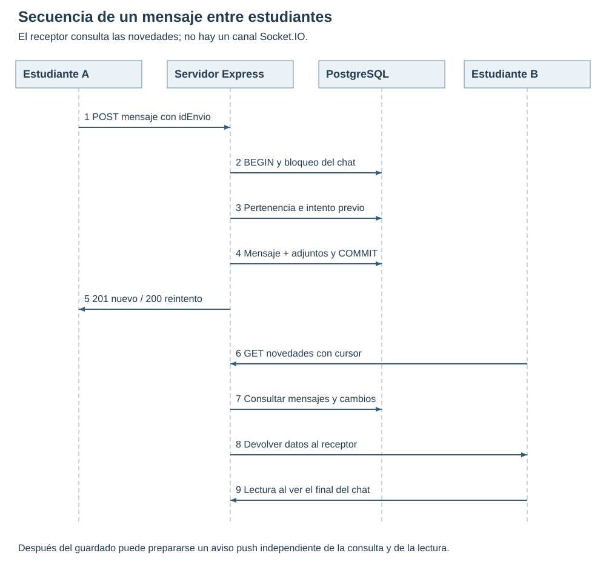
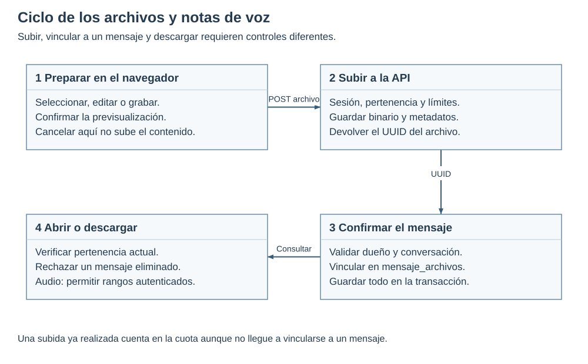

Paso 7 de 12 · Documento de análisis
El recorrido de un mensaje
Qué ocurre desde que se escribe un mensaje hasta que se recibe.
Del estudiante emisor al historial
Cuando un estudiante envía un avance a otro compañero o a su grupo, el sistema debe conservarlo antes de confirmarlo y entregarlo únicamente a sus participantes.
- Preparar: la interfaz conserva el borrador y genera un UUID
idEnvio. Si hay adjuntos, los sube primero y recoge sus identificadores. - Solicitar: envía texto, identificador, respuesta opcional y lista de archivos a
POST /api/conversaciones/:id/mensajes. El emisor se obtiene de la sesión. - Autorizar: el servidor comprueba sesión, pertenencia y formato. Dentro de una transacción bloquea la conversación y vuelve a comprobar pertenencia.
- Reconocer un reintento: busca la pareja emisor e identificador. Si chat, texto, respuesta y archivos coinciden, devuelve el mensaje existente; si cambian, responde con conflicto.
- Guardar: comprueba que la respuesta pertenece al mismo chat y que los archivos son del emisor, de esa conversación y no están vinculados. Inserta mensaje y asociaciones; confirma la transacción.
- Confirmar: devuelve el mensaje con su ID y fecha de servidor. Un envío nuevo responde 201; un reintento reconocido, 200. La interfaz sustituye el pendiente por el registro confirmado.
- Recuperar: el navegador del destinatario consulta las novedades. El servidor filtra por pertenencia y la interfaz incorpora o actualiza cada mensaje por su ID.
Secuencia interna


Ampliar diagramaSincronización, historial y lectura
El cliente espera aproximadamente 1,8 segundos después de terminar cada ciclo antes del siguiente, o 6 segundos si la pestaña está oculta. Consulta la lista de conversaciones y los mensajes del chat abierto. No mantiene un canal WebSocket o Socket.IO.
La consulta inicial trae la última página. antes solicita mensajes anteriores, despues trae los posteriores al cursor y cambios recupera ediciones, eliminaciones y respuestas afectadas desde una fecha del servidor. La interfaz concilia por ID para no dibujar copias repetidas.
La lectura avanza con POST /api/conversaciones/:id/lectura al consultar con el chat visible y cerca del final del historial, o al llegar al final mediante desplazamiento. La base usa GREATEST para que el indicador no retroceda. La vista móvil oculta no marca lectura durante la consulta.
Desconexión y reintentos
Si se pierde la respuesta, el estudiante puede ver un fallo aunque el mensaje ya esté guardado. Reintentar reutiliza exactamente el intento original. La recuperación de Internet reactiva la consulta del historial; no reenvía automáticamente borradores.
Borradores y pendientes viven en la memoria de la página. Cambiar de chat los conserva durante esa apertura; recargar o cerrar puede perderlos. Si la transacción falla, se revierte el mensaje junto con sus asociaciones; los archivos que ya se subieron permanecen almacenados.
Archivos, imágenes y audio


Ampliar diagramaLas fotos de perfil pueden consultarse con sesión. Los adjuntos requieren pertenencia actual al chat; antes de vincularse, solo su propietario puede abrirlos. Un mensaje eliminado impide descargarlos. La nota de voz sigue el mismo circuito de adjunto, con captura mediante permiso de micrófono.
Avisos y presencia
Después de confirmar un mensaje nuevo se preparan avisos push para miembros con suscripción y sesión vigentes que no hayan silenciado el chat. Un fallo de ese aviso no revierte el mensaje. El service worker avisa a ventanas abiertas y puede mostrar la notificación si ninguna está enfocada.
La presencia se actualiza por sesión mediante latidos mientras la página está visible. Al ocultarla o salir se envía una señal de pausa. Es una estimación de actividad, no una prueba de lectura ni de disponibilidad física del estudiante.
Documentos y modelos
Consultar la documentación completa en PDF. Esta página y el documento del paso describen el mismo diseño del sistema.